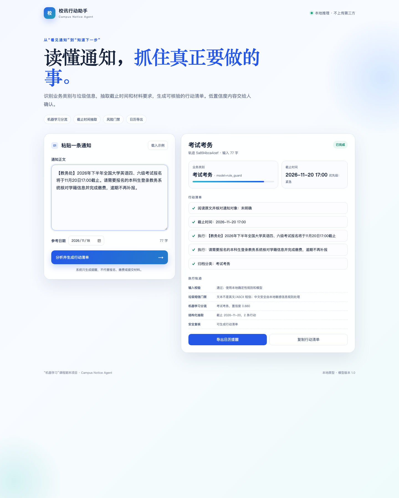

MACHINE LEARNING COURSE PROJECT
读懂通知，抓住真正要做的事。
一个可本地运行的机器学习 Agent：完成中文校园通知分类、截止时间抽取、材料整理、垃圾短信门禁、人工复核和日历导出。
0.985SMS 测试准确率
0.996SMS ROC-AUC
1.000边界案例日期准确率
0应复核却自动放行

系统做什么
输入一条校园通知后，系统通过中文字符 TF-IDF 与逻辑回归进行七类业务分流，再抽取截止日期、材料与行动；英文垃圾短信由词级和字符级 TF-IDF 模型在行动生成前拦截。低置信度、待定时间和敏感信息风险交给人确认。
本地运行
python3.10 -m venv .venvsource .venv/bin/activatepip install -r requirements.txtPYTHONPATH=src python -m notice_agent.server --port 8765
浏览器打开 http://127.0.0.1:8765。训练好的模型、测试、实验指标、数据下载与复现步骤均在仓库中。
声明与边界
本页面只展示课程项目演示。公开仓库不包含学号姓名、含个人联系方式的原始通知正文或 API 密钥。系统不代替用户登录、报名、缴费或提交材料，模型结果不用于学籍、考试或处分等高风险自动决策。